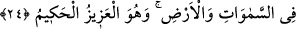

et-Te’vilâtü’n-necmiyye’de şöyle denilmiştir: Bu âyet-i kerime sonuna kadar Allah
Teâlâ’nın yüce zâtının birliğine ve sıfatlarının eşsizliğine ve her şeyde ezelî hikmetinin
gereğine uygun olarak tasarruf ettiğine işâret etmektedir. O’nun yaratılmışlar için
mümkün olan noksanlardan münezzeh ve beri olduğuna, mutlak varlığı gerçekleşmiş
olması sebebiyle yok olma tehlikesinden emîn olmakla sıfatlandığına, her şeyi kendi
mahiyetinde hıfzedip koruduğuna, dostlarını aziz kılıp düşmanlarını alçaltıp
kahredeceğine, ululuk ve sonsuz büyüklüğünün görülen bütün varlıklara yansıdığına,
mânâ itibariyle de sıfatlarında ve yüce zâtı konusunda şirk koştukları şeylerden son
derece münezzeh bulunduğuna işâret etmektedir.
Baklî Arâis adlı eserde şöyle demiştir: Biz, onların gözle görülenlerle ve
düşüncelerle Allah’a koştukları şirklerden O’nu tesbih ve tenzih ederiz.
24. O, yaratan, var eden, şekil veren Allah’tır. En güzel isimler O’nundur.
Göklerde ve yerde olanlar O’nun şânını yüceltmektedirler. O, galiptir, hikmet
sâhibidir.
“O, Hâlık’tır; yaratandır.” Yâni Allah Teâlâ, eşyayı ilâhî meşîetine/dilemesine uygun
ve hikmeti gereği takdir edendir. Her ne kadar halk/yaratma kelimesi tâyin etmek,
düzeltmek sûretiyle îcad etmek ve yoktan var etmek anlamında yaygın ise de kelimenin
asıl anlamı “takdir etmek”tir. Nitekim araplar şeklini, büyüklük ve küçüklüğünü tâyin
edip düzelten kimse için haleka’n-n’âle “nâlini takdir etti” derler. Bu takdir etme, ister
insan ve benzerlerinin menîden yaratılması gibi bir maddeden takdir edilsin, isterse
göklerin ve yerin yaratılması gibi madde dışında yoktan var edilmesi gibi olsun,
müsavidir.
Herşeyi yoktan var eden Hâlık Teâlâ’nın kulu/Abdü’l-Hâlık olduğunu bilen kimse,
eşyayı Cenab-ı Hakk’ın murâdına uygun olarak takdir eder. Çünkü Cenab-ı Hak ona halk
ve takdir sıfatlarıyla tecellî etmiştir.
Bu yüce ismin hassası, gecenin bir saatinde veya daha fazla O’nu zikretmektir. Bu
sebeple de bu yüce ismi zikredenin kalbi ve yüzü aydınlanır.
el-Erbeîn el-İdrisiyye’de şöyle geçer: O, yerdekilerin ve göktekilerin yaratıcısı,
takdir edicisidir. Her şeyin dönüşü O’nadır.
Sühreverdi şöyle demiştir: Bir daha elde edilmesi ümidsiz olan yitik eşyanın
bulunması için bu yüce isim beş bin defa okunur.
“O, Bâri’dir; var edendir.” Eşyayı birbirine ters düşmekten uzak olarak icad edendir.
Ber’ kelimesi yarattığı şeyleri, kâmil bir sebep ve sonsuz bir hikmete göre, takdirin
gerektirdiklerinden ne eksik, ne az, ne de fazla olarak var etmektir.
Bu ismin sâhibi Yüce Allah’ın kulu/Abdü’l-Bâri olduğunu bilen, ameli eksiklik,